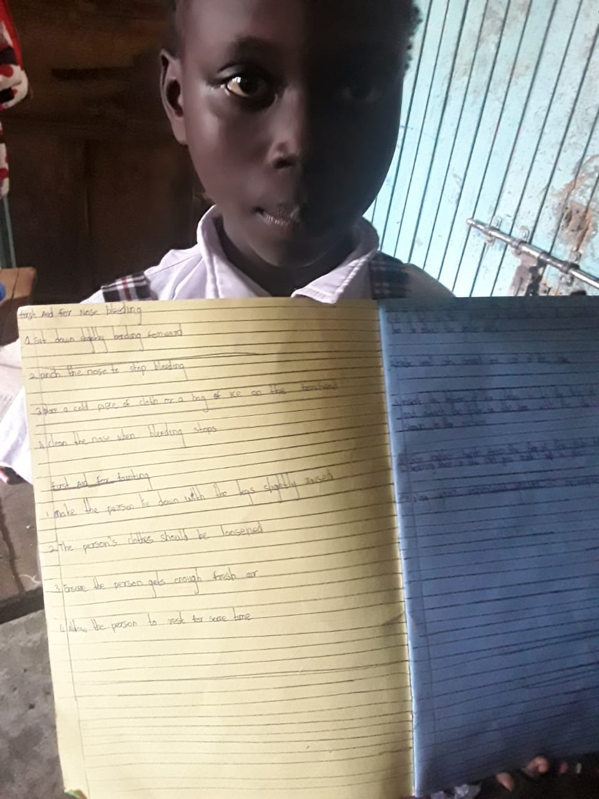
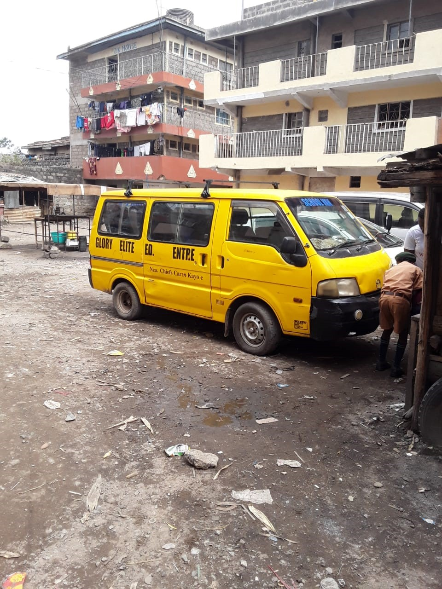
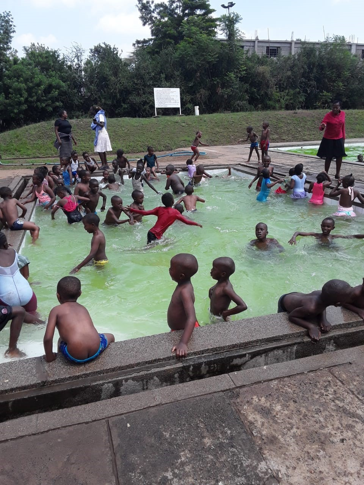
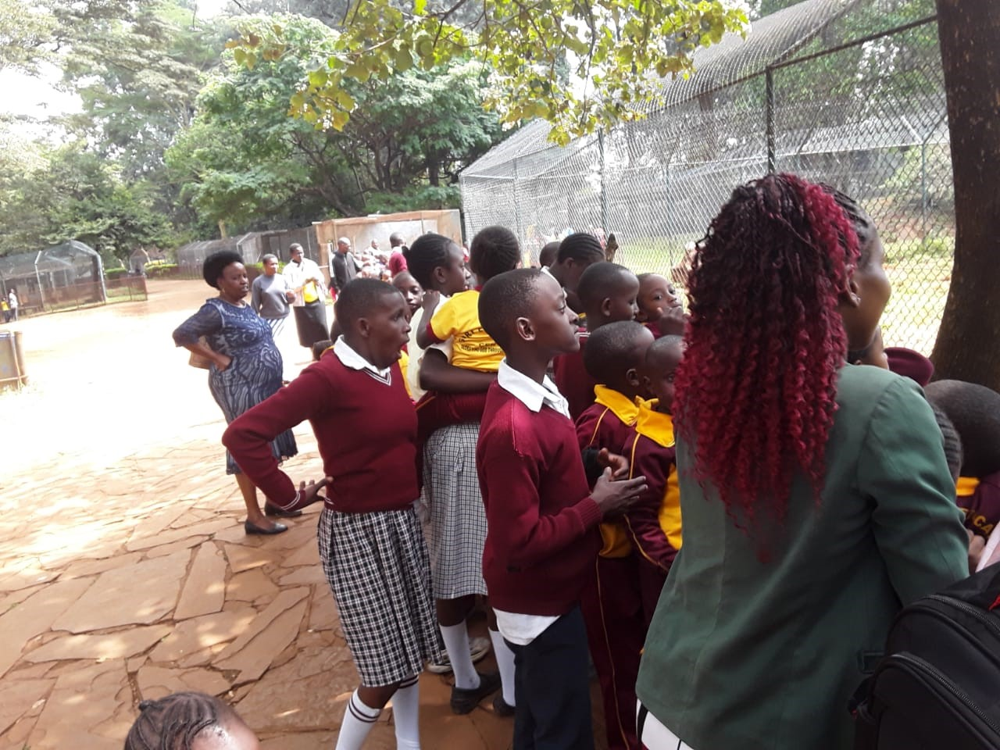
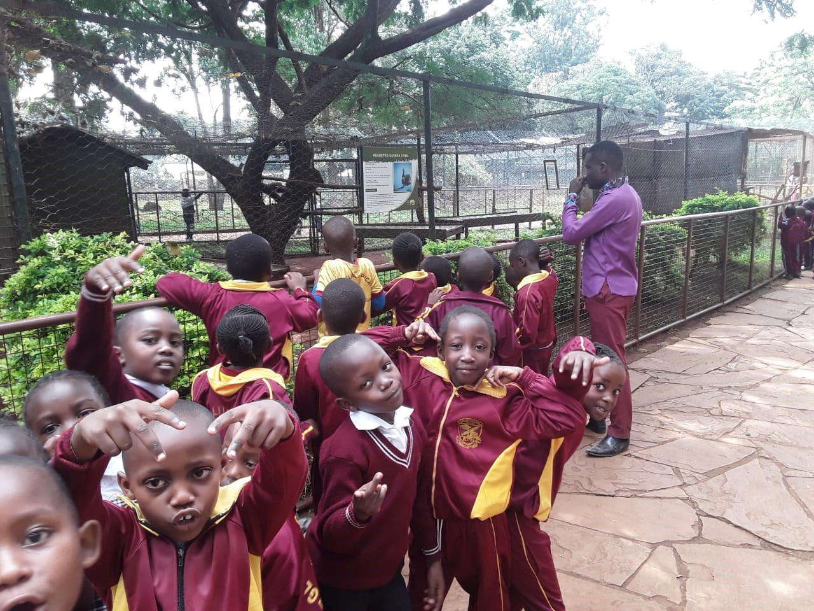

Overview

Glory Elite Education Centre follows the Competency-Based Curriculum (CBC), which focuses on nurturing learners’ talents, skills, creativity, and practical understanding of real-life situations.
We believe education should go beyond textbooks. Our teaching approach ensures that learners develop academically, socially, emotionally, and physically.
Competency-Based Curriculum (CBC)

Under the CBC system, learners are actively involved in hands-on activities, group work, problem-solving tasks, and interactive learning sessions. This helps them build confidence, creativity, and critical thinking skills.
We ensure that all CBC learning areas are well implemented, including literacy, numeracy, environmental activities, and digital literacy (computer studies).
Learning Areas

We offer a wide range of learning areas including:
- English Language
- Kiswahili Language
- Mathematics
- Science & Technology
- Social Studies
- Creative Arts
- Physical & Health Education
- Computer Studies (Digital Literacy)
Computer studies play a key role in preparing learners for the modern digital world, equipping them with essential ICT skills from an early age.
Extracurricular Activities

In line with CBC requirements, we strongly support extracurricular activities as part of holistic development. These activities help learners discover their talents and build teamwork, leadership, and confidence.
- Sports and Games (football, netball, athletics)
- Music, Dance and Drama
- Clubs and Societies
- Environmental Activities
- Talent Shows and Cultural Days
- Art and Craft Activities
We regularly organize school trips, educational tours, and outdoor learning experiences that expose learners to real-world environments and broaden their understanding of different subjects.
Educational Trips

Our learners participate in supervised educational trips to museums, parks, industries, and other learning institutions. These trips enhance understanding of classroom concepts through real-life exposure.
Our Alumni

We are proud of our former learners who have successfully completed their primary education at Glory Elite Education Centre and have progressed to secondary schools, colleges, and universities.
Their success is a reflection of our strong academic foundation, discipline, and commitment to quality education. We continue to follow up and celebrate their achievements as part of our extended school family.